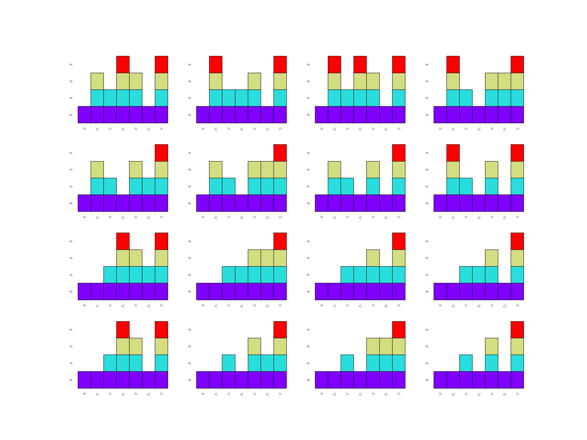
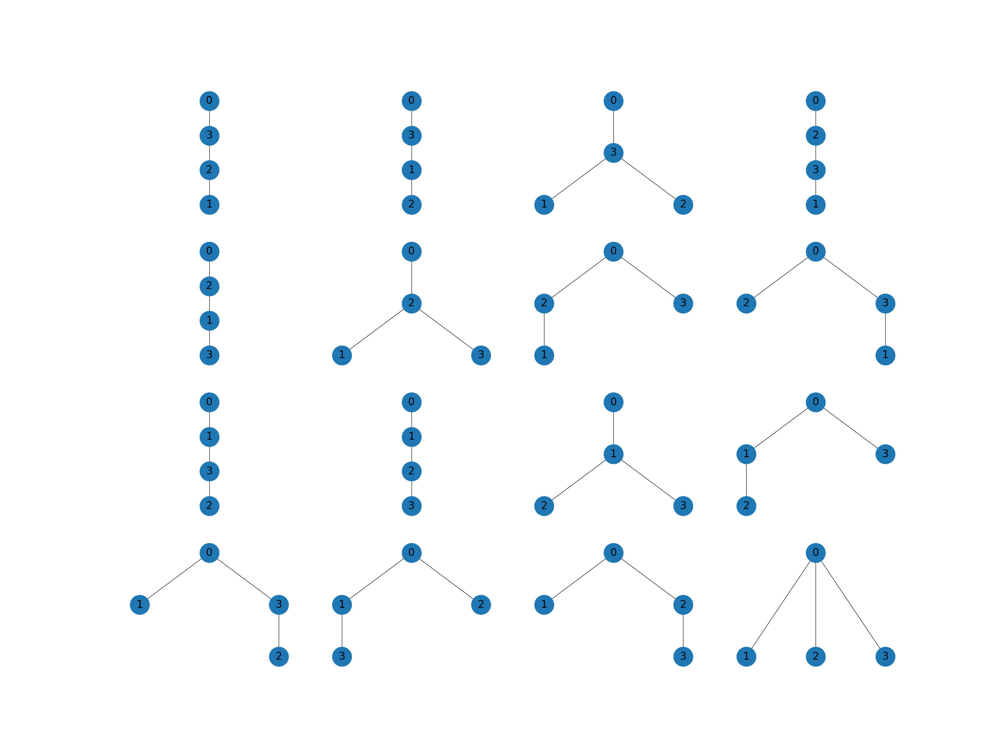
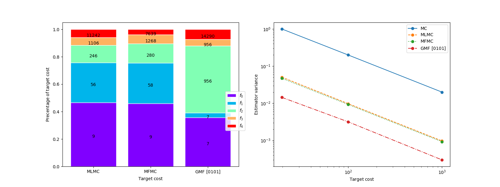
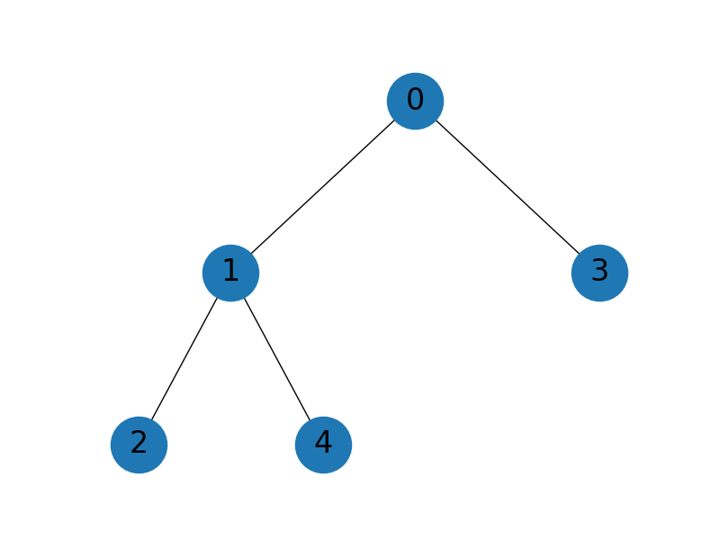

Note
Go to the end to download the full example code
Parametrically Defined Approximate Control Variates
MLMC and MFMC are just two possible ACV estimators derived from two different allocation matrices. This tutorial presents Numerous other ACV estimators which can be constructed by utilizing different allocation matrices.
Multi-fidelity Monte Carlo) demonstrates that MFMC and MLMC are incapable of achieving the variance reduction of CV estimators with known statistics because model \(m\) as a contol variate to help estimate the statistic of model \(m-1\). ormally, a model \(f_\beta\) acts as a control variate for model \(f_\alpha\) if \(\rvset_\beta^*=\rvset_\alpha\). Consequently, [GGEJJCP2020] introduced the ACVMF and the ACVIS estimators which use the \(m\) th model as a control variate for the high-fidelity 0th-model. The allocation matrices of ACVMF and ACCVIS estimators, for three models, are given respectively by
These were shown to outperform MLMC and MFMC for certain problems, however none of the allocation matrices associated with these four estimators is provably optimal for all problems. Consequently, [BLWLJCP2022] formulated a large class of so-called parameterically defined ACV (PACV) estimators that can be enumerated and used to choose the best allocation matrix for a given problem.
PACV estimators are derived from a so called based allocation matrix and a recursion index \(\gamma=[\gamma_1, \ldots, \gamma_M]^\top\) that defines a zero-rooted directed acyclic graph (DAG) that controls which models are used for control variates for other models. Specifically, if the jth recursion index entry \(\gamma_j=i\), then the jth model acts as a control variate for the ith model such that \(\rvset_j^*=\rvset_i\). For example, the recusion indices of the MLMC and MFMC estimators are both \([0, 1, \ldots, M]\) and the recursion indices of the ACVIS and ACVMF estimators are both \([0, 0, \ldots, 0]\).
To date three classes of PACV estimators, derived from three different base allocation matrices. These three classes of PACV estimators are presented below.
Generalized Multi-fidelity Estimators
Generalized multi-fidelity (GMF) estimators are derived from the MFMC allocation matrix presented in Multi-fidelity Monte Carlo. GMF allocation matrices assume that if gamma_j=i then \(\rvset_j^*=\rvset_i\) and \(\rvset_i\subset =\rvset_j\). Note ACVMF estimators are GMF estimators that use the recursion index \([0, 0, \ldots, 0]\). Futhermore, MFMC estimators are GMF estimators that use the recursion index \([0, 1, \ldots, M]\). The following code plots the allocation matrices of all four model GMF esimators and the associated DAGs.
import numpy as np
import matplotlib.pyplot as plt
from pyapprox.util.visualization import mathrm_labels
from pyapprox.benchmarks import setup_benchmark
from pyapprox.multifidelity.factory import (
get_estimator, compare_estimator_variances, compute_variance_reductions,
multioutput_stats)
from pyapprox.multifidelity.visualize import (
plot_estimator_variance_reductions)
nmodels = 4
np.random.seed(1)
benchmark = setup_benchmark("polynomial_ensemble")
model = benchmark.fun
cov = benchmark.covariance[:nmodels, :nmodels]
costs = np.asarray([10**-ii for ii in range(nmodels)])
stat = multioutput_stats["mean"](benchmark.nqoi)
stat.set_pilot_quantities(cov)
gmf_est = get_estimator("gmf", stat, costs, tree_depth=nmodels-1)
recursion_indices = list(gmf_est.get_all_recursion_indices())
axs_mats = plt.subplots(4, 4, figsize=(4*8, 4*6))[1].flatten()
axs_graphs = plt.subplots(4, 4, figsize=(4*8, 4*6))[1].flatten()
for ii, recursion_index in enumerate(recursion_indices):
gmf_est._set_recursion_index(recursion_index)
gmf_est.plot_allocation(axs_mats[ii])
_ = gmf_est.plot_recursion_dag(axs_graphs[ii])
- 
- 
Generalized Recursive Difference Estimators
Generalized recursive difference (GRD) estimators are derived from the MLMC allocation matrix presented in Multi-level Monte Carlo. The assume that if \(\gamma_j=i\) then \(\rvset_j^*=\rvset_i\) and if i!=j \(\rvset_i\cap\rvset_j\neq\emptyset\). Note MLMC estimators are GRD estimators that use the recursion index \([0, 1, \ldots, M]\). The following code plots the allocation matrices of all four model GRD esimators. The DAGs are not plotted because they are independent of the base allocation matrix and thus are the same as those plotted for the GMF estimators.
grd_est = get_estimator("grd", stat, costs, tree_depth=nmodels-1)
recursion_indices = list(gmf_est.get_all_recursion_indices())
axs_mats = plt.subplots(4, 4, figsize=(4*8, 4*6))[1].flatten()
for ii, recursion_index in enumerate(recursion_indices):
grd_est._set_recursion_index(recursion_index)
_ = grd_est.plot_allocation(axs_mats[ii])

Generalized Independent Sample Estimators
Generalized indepedent sample (GIS) estimators are derived from the ACVIS allocation matrix. The assume that if gamma_j=i then \(\rvset_j^*=\rvset_i\) and \(\rvset_i^*\subset\rvset_i\). Note ACVIS estimators are GIS estimators that use the recursion index \([0, 0, \ldots, 0]\). The following code plots the allocation matrices of all four model GIS esimators.
gis_est = get_estimator("gis", stat, costs, tree_depth=nmodels-1)
recursion_indices = list(gmf_est.get_all_recursion_indices())
axs_mats = plt.subplots(4, 4, figsize=(4*8, 4*6))[1].flatten()
for ii, recursion_index in enumerate(recursion_indices):
gis_est._set_recursion_index(recursion_index)
_ = gis_est.plot_allocation(axs_mats[ii])
The following code shows the benefit of using all models as control variates for the highest fidelity model, such as is enforced by ACVMF estimators. Specifically, it shows that as the number of low-fideliy samples increases, but the number of high-fidelity samples is fixed, the ACVMF estiamtor variance converges to the estiamtor variance of the CV estimator that uses all 5 models. In contrast the MLMC and MFMC estimators only converge to the CV estimator CV that uses 1 low-fidelity model. However, these two approaches reduce the variance of the estimator more quickly than the ACV estimator, but cannot obtain the optimal variance reduction.
nmodels = 5
cov = benchmark.covariance
costs = np.asarray([10**-ii for ii in range(nmodels)])
nhf_samples = 1
cv_stats, cv_ests = [], []
for ii in range(1, nmodels):
cv_stats.append(multioutput_stats["mean"](benchmark.nqoi))
cv_stats[ii-1].set_pilot_quantities(cov[:ii+1, :ii+1])
cv_ests.append(get_estimator(
"cv", cv_stats[ii-1], costs[:ii+1],
lowfi_stats=benchmark.mean[1:ii+1]))
cv_labels = mathrm_labels(["CV-{%d}" % ii for ii in range(1, nmodels)])
target_cost = nhf_samples*sum(costs)
[est.allocate_samples(target_cost) for est in cv_ests]
cv_variance_reductions = compute_variance_reductions(cv_ests)[0]
from util import (
plot_control_variate_variance_ratios,
plot_estimator_variance_ratios_for_polynomial_ensemble)
stat = multioutput_stats["mean"](benchmark.nqoi)
stat.set_pilot_quantities(cov)
estimators = [
get_estimator("mlmc", stat, costs),
get_estimator("mfmc", stat, costs),
get_estimator("gmf", stat, costs,
recursion_index=np.zeros(nmodels-1, dtype=int))]
est_labels = est_labels = mathrm_labels(["MLMC", "MFMC", "ACVMF"])
ax = plt.subplots(1, 1, figsize=(8, 6))[1]
plot_control_variate_variance_ratios(cv_variance_reductions, cv_labels, ax)
_ = plot_estimator_variance_ratios_for_polynomial_ensemble(
estimators, est_labels, ax)
PACV estimators can be used to find the best estimator for a given problem. Given estimates of covariance (when estimating the mean, and the other stats needed to estimate other statistics), we can enumerate all PACV estimators, optimize theier sample allocaiton, and choose the best PACV estimator with the smallest estimator variance.
The following code compares the best GMF, GRD and GIS estimators with the MLMC, MFMC and ACVMF estimators.
estimators = [
get_estimator("mlmc", stat, costs),
get_estimator("mfmc", stat, costs),
get_estimator("gmf", stat, costs,
recursion_index=np.zeros(nmodels-1, dtype=int)),
get_estimator("gmf", stat, costs, tree_depth=4),
get_estimator("grd", stat, costs, tree_depth=4),
get_estimator("gis", stat, costs, tree_depth=4)]
est_labels = est_labels = mathrm_labels(
["MLMC", "MFMC", "ACVMF", "GMF", "GRD", "GIS"])
ax = plt.subplots(1, 1, figsize=(8, 6))[1]
plot_control_variate_variance_ratios(cv_variance_reductions, cv_labels, ax)
_ = plot_estimator_variance_ratios_for_polynomial_ensemble(
estimators, est_labels, ax)
Enumerating the PACV estimators allows one to choose the best estimator for any estimator cost. The recursion indices used by MLMC and MFMC are chosen for small numbers of low-fidelity samples and alternative estimators are chosen as the number of low-fidelity sampes is increased. The following compares the best GMF estimamtor against MLMC and MFMC.
target_costs = np.array([2e1, 1e2, 1e3], dtype=int)
estimators = [
get_estimator("mc", stat, costs),
get_estimator("mlmc", stat, costs),
get_estimator("mfmc", stat, costs),
get_estimator("gmf", stat, costs, tree_depth=nmodels-1,
allow_failures=False)]
est_labels = mathrm_labels(["MC", "MLMC", "MFMC", "GMF"])
optim_opts = {'ftol': 1e-6, 'maxiter': 10000, "iprint": 0, "scaling": 0.01,
"method": "SLSQP", "verbosity": 0}
optimized_estimators = compare_estimator_variances(
target_costs, estimators, optim_opts)
idx = 0
gmf_est = optimized_estimators[-1][idx]
print("GMF best estimator", gmf_est)
model_labels = ["$f_{0}$".format(ii) for ii in range(nmodels)]
est_labels[-1] += " ${0}$".format(gmf_est._recursion_index)
fig, axs = plt.subplots(1, 2, figsize=(2*8, 6))
from pyapprox.multifidelity.visualize import (
plot_estimator_sample_allocation_comparison, plot_estimator_variances)
plot_estimator_sample_allocation_comparison(
[est[0] for est in optimized_estimators[1:]], model_labels, axs[0],
xlabels=est_labels[1:])
_ = plot_estimator_variances(
optimized_estimators, est_labels, axs[1],
relative_id=0, cost_normalization=1)
fig, ax = plt.subplots(1, 1, figsize=(8, 6))
_ = gmf_est.plot_recursion_dag(ax)
- 
- 
GMF best estimator GMFEstimator(stat=MultiOutputMean, recursion_index=[0 1 0 1], criteria=-10 target_cost=19.645, ratios=[ 0. 135.57142857 0. 1904.85714286], nsamples=[ 7 7 956 956 14290])
Here we optimized the sample allocation for multiple target costs. This checks if optimization is sensitive to target cost. However, one can simply compute the optimal allocation for one target cost then linearly scale by the ratio with it and the other target costs of interest.
References
Total running time of the script: ( 2 minutes 41.823 seconds)